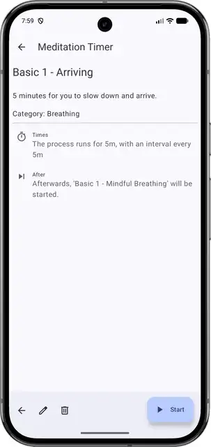

Meditation Timer
إنتاجية ومهام
Meditation Timer for Android is a free, open source app that can count and beep. It helps with repeating tasks, such as meditation. In essence, it is a simpler version of Foto Timer, and a rewrite of the original Meditation Timer for PalmOS from 20 years ago. Meditation Timer is working with "proces
✓ ترخيص مفتوح (EUPL-1.2) · آخر تحديث: 2026-11-06
1.2.1الإصدار
4.8 MBالحجم
EUPL-1.2الرخصة
Open in Kanzتحميل APK (4.8 MB)
Download APK
SHA-256: 8c5cb41739537aafe39e85351eef23a7bfe976b082aa7bac0fcd7a502119c9c2

تطبيقات تانية لنفس المطوّر (6)
More apps from this developer: com.exner
امسح الكود لفتح صفحة التطبيق
Scan to open this app page
لو كنز مش متثبت عندك: نزّل متجر كنز.
Not installed? Get the Kanz store.